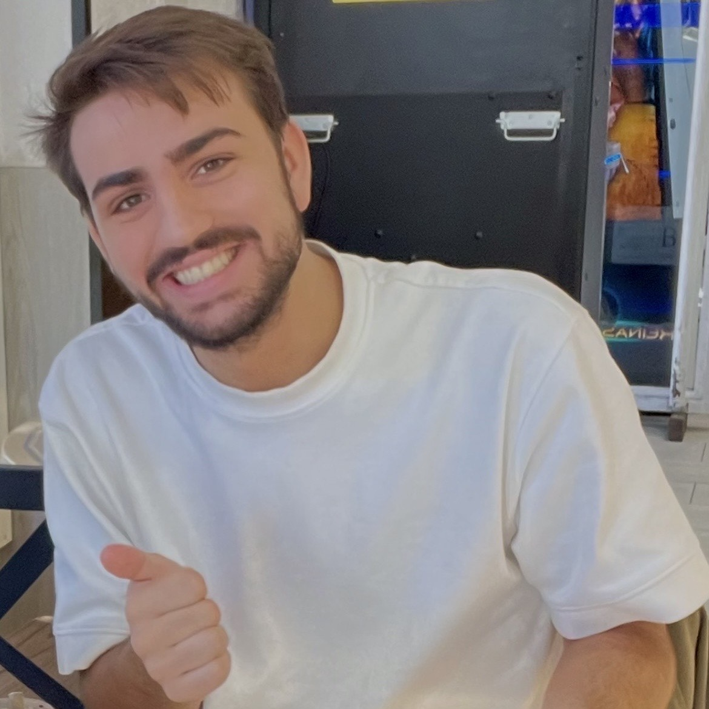
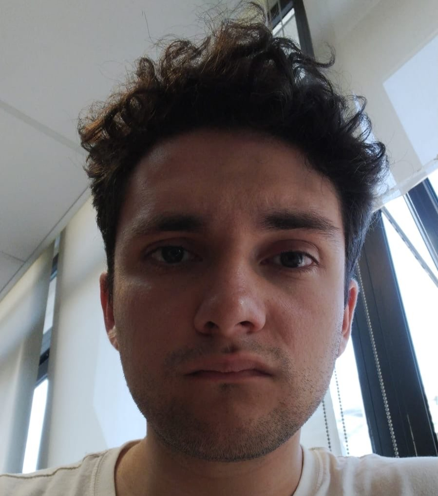
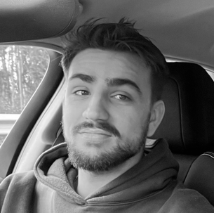

LA LIGA DEL NORTE
League of Legends Tournament
Noticias

📢 Roi Ageitos regresa a la presidencia de La Liga del Norte 📢
El fundador retoma el liderazgo en un momento clave para reactivar el interés, la organización y el rumbo de la competición


🎖️ Diego asume la capitanía de FF15 en una nueva etapa para el equipo 🎖️
El jugador más imprevisible de La Liga del Norte afronta el reto de liderar a su equipo tras la polémica con el presidente

📢🚨El presidente de La Liga del Norte DIMITE tras tres años de gestión‼️
El fundador de la competición deja su cargo alegando motivos personales y “ciertos eventos recientes” que tambien le han afectado de cerca
FF15 sufre su primera derrota y abre un periodo de reflexión tras caer ante TARNISHED
El conjunto, hasta ahora invicto en La Liga Del Norte, muestra grietas en su juego y en su comunicación interna, lo que podría implicar cambios de cara a las próximas jornadas.
La Liga del Norte ordena repetir el partido entre Chorbitos y Monos Coruña
La directiva ha resuelto la demanda presentada por Chorbitos y obliga a repetir el encuentro
Los Chorbitos demandan a Monos Coruña tras el polémico debut en La Liga del Norte
El conjunto novato acusa a su rival de excederse en los baneos de campeones durante la fase de selección entre otras múltiples irregularidades, lo que consideran una práctica antirreglamentaria y desleal.